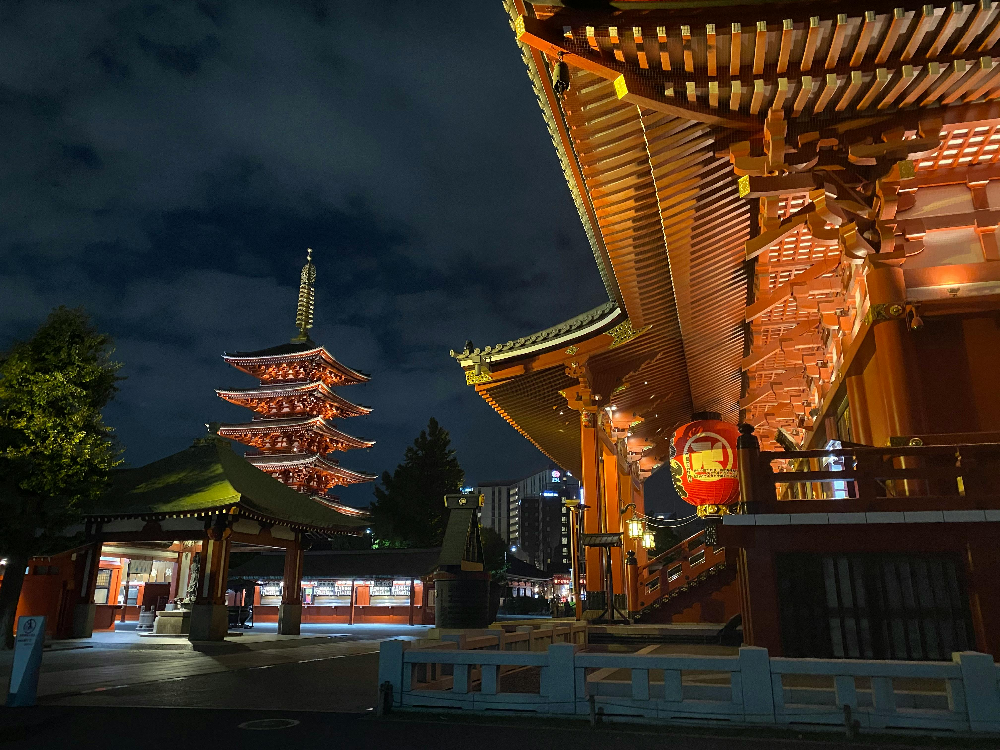

The Tokyo megalopolis represents the centre of Japanese culture and is located in the Kanto region on Honshu, Japan’s largest island. It has an area of 6,993 square kilometres, 36.29 per cent of which are green areas and parks. The central part of the city has a population of 8,457,000, while the entire area has a population of 12,544,000 (statistical data from 2005). The city is a mix of traditional and modern art, technology, modern architecture, haute couture, culture and a busy lifestyle. Through travel tips focused on a sustainable way of spending leisure time, we invite you to join us on a trip to the famous Tokyo where cultural diversity depicts the modern life in the megalopolis of neon lights.
Best Tokyo Attractions
Sensō-ji
Meiji Jingu

Tokyo Tower

Yoyogi Park

Imperial Palace

Shibuya Scramble Crossing